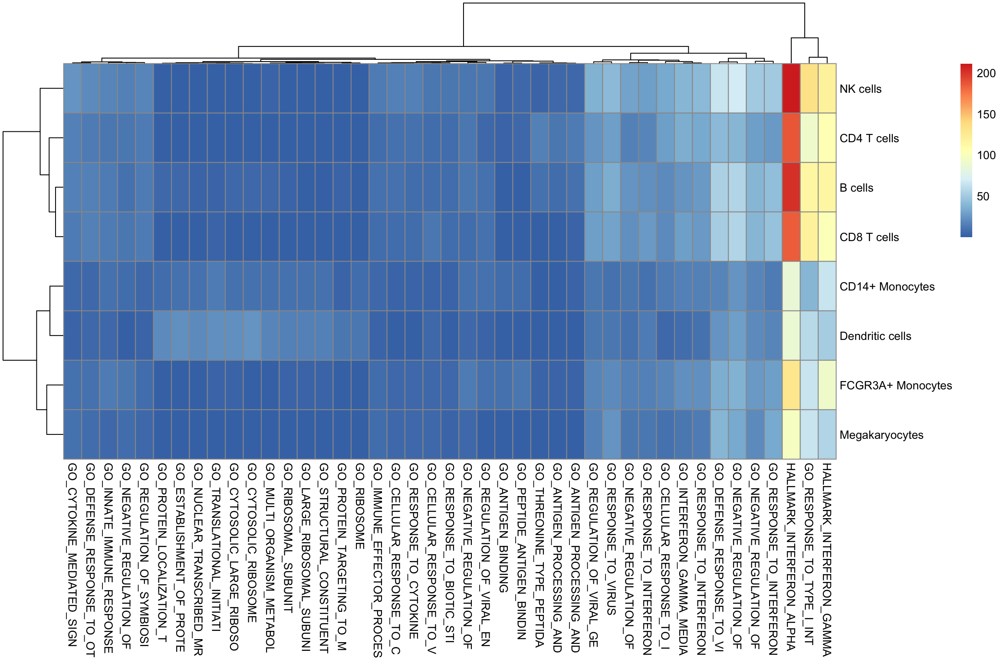
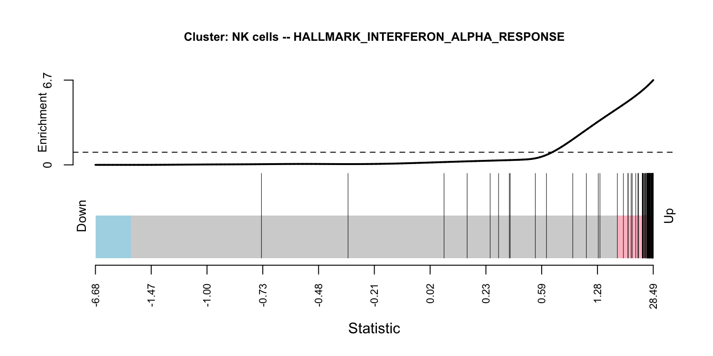
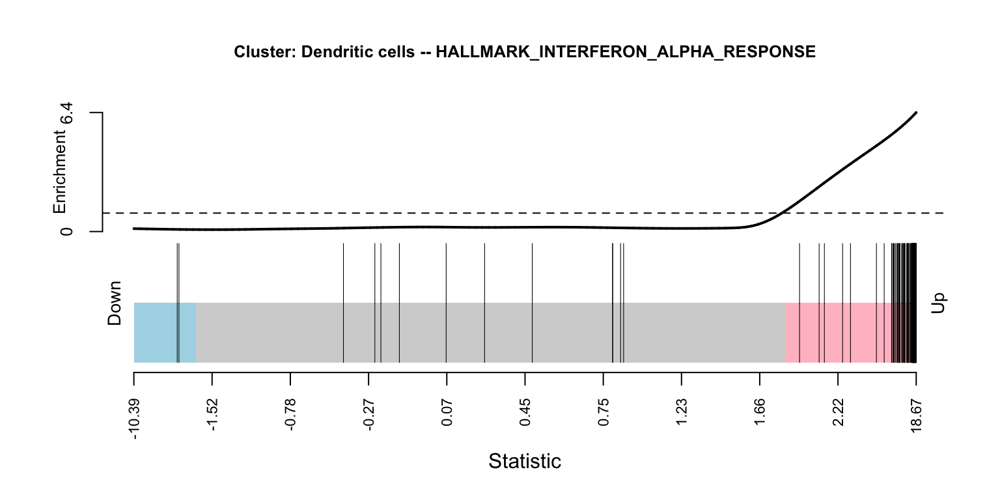
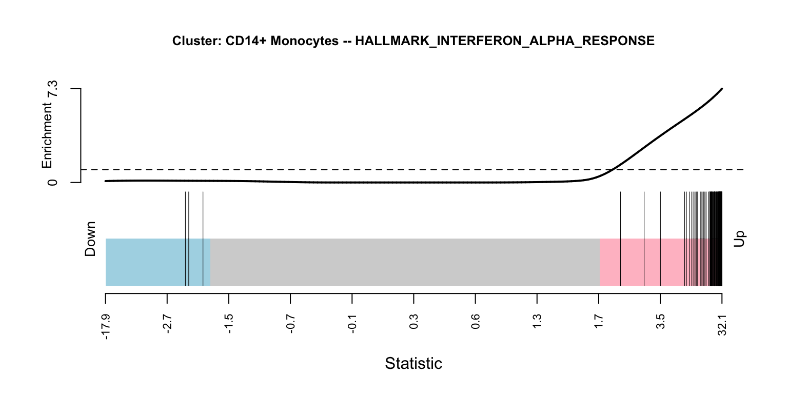

Last updated: 2019-01-31
workflowr checks: (Click a bullet for more information) ✔ R Markdown file: up-to-date
Great! Since the R Markdown file has been committed to the Git repository, you know the exact version of the code that produced these results.
✔ Environment: empty
Great job! The global environment was empty. Objects defined in the global environment can affect the analysis in your R Markdown file in unknown ways. For reproduciblity it’s best to always run the code in an empty environment.
✔ Seed:
set.seed(20190128)
The command set.seed(20190128) was run prior to running the code in the R Markdown file. Setting a seed ensures that any results that rely on randomness, e.g. subsampling or permutations, are reproducible.
✔ Session information: recorded
Great job! Recording the operating system, R version, and package versions is critical for reproducibility.
✔ Repository version: 6f2fa80
wflow_publish or wflow_git_commit). workflowr only checks the R Markdown file, but you know if there are other scripts or data files that it depends on. Below is the status of the Git repository when the results were generated:
Ignored files:
Ignored: chimera_tal1_differential_state/.DS_Store
Ignored: chimera_tal1_differential_state/.Rhistory
Ignored: chimera_tal1_differential_state/.Rproj.user/
Ignored: demuxlet_differential_state/.DS_Store
Ignored: demuxlet_differential_state/.Rhistory
Ignored: demuxlet_differential_state/.Rproj.user/
Untracked files:
Untracked: .DS_Store
Untracked: .gitignore
Untracked: chimera_tal1_differential_state/analysis/01-preprocess.Rmd
Untracked: chimera_tal1_differential_state/data/README.txt
Untracked: chimera_tal1_differential_state/data/corrected_pcas.rds
Untracked: chimera_tal1_differential_state/data/genes.tsv
Untracked: chimera_tal1_differential_state/data/meta.tab
Untracked: chimera_tal1_differential_state/data/raw_counts.mtx
Untracked: chimera_tal1_differential_state/data/sizefactors.tab
Untracked: demuxlet_differential_state/data/GSE96583_batch1.genes.tsv.gz
Untracked: demuxlet_differential_state/data/GSE96583_batch1.total.tsne.df.tsv.gz
Untracked: demuxlet_differential_state/data/GSE96583_batch2.genes.tsv.gz
Untracked: demuxlet_differential_state/data/GSE96583_batch2.total.tsne.df.tsv.gz
Untracked: demuxlet_differential_state/data/GSE96583_genes.txt.gz
Untracked: demuxlet_differential_state/data/GSM2560245_A.mat.gz
Untracked: demuxlet_differential_state/data/GSM2560245_barcodes.tsv.gz
Untracked: demuxlet_differential_state/data/GSM2560246_B.mat.gz
Untracked: demuxlet_differential_state/data/GSM2560246_barcodes.tsv.gz
Untracked: demuxlet_differential_state/data/GSM2560247_C.mat.gz
Untracked: demuxlet_differential_state/data/GSM2560247_barcodes.tsv.gz
Untracked: demuxlet_differential_state/data/GSM2560248_2.1.mtx.gz
Untracked: demuxlet_differential_state/data/GSM2560248_barcodes.tsv.gz
Untracked: demuxlet_differential_state/data/GSM2560249_2.2.mtx.gz
Untracked: demuxlet_differential_state/data/GSM2560249_barcodes.tsv.gz
Untracked: demuxlet_differential_state/output/GSE96583_diff_state_list.rds
Untracked: demuxlet_differential_state/output/GSE96583_diff_state_table.csv
Untracked: demuxlet_differential_state/output/GSE96583_diff_state_table.rds
Untracked: demuxlet_differential_state/output/GSE96583_geneset_data.rds
Untracked: demuxlet_differential_state/output/GSE96583_geneset_results.rds
Untracked: demuxlet_differential_state/output/GSE96583_geneset_results_FDR_5perc.csv
Untracked: demuxlet_differential_state/output/GSE96583_pseudobulks.rds
Untracked: demuxlet_differential_state/output/GSE96583_sce.rds
Unstaged changes:
Modified: demuxlet_differential_state/analysis/_site.yml
| File | Version | Author | Date | Message |
|---|---|---|---|---|
| html | 6f2fa80 | markrobinsonuzh | 2019-01-31 | Build site. |
| Rmd | 2affd05 | markrobinsonuzh | 2019-01-30 | add geneset analysis |
| html | 2affd05 | markrobinsonuzh | 2019-01-30 | add geneset analysis |
| Rmd | 5dbabcf | markrobinsonuzh | 2019-01-30 | 3/4 of way to demuxlet DS analysis |
| html | 5dbabcf | markrobinsonuzh | 2019-01-30 | 3/4 of way to demuxlet DS analysis |
suppressPackageStartupMessages({
library(limma)
library(msigdbr)
library(dplyr)
library(reshape2)
library(SingleCellExperiment)
library(pheatmap)
})sce <- readRDS("output/GSE96583_sce.rds")
res <- readRDS("output/GSE96583_diff_state_list.rds")
data <- res$data
ei <- metadata(sce)$experiment_info
rm(sce); gc() used (Mb) gc trigger (Mb) limit (Mb) max used (Mb)
Ncells 4810289 256.9 8752334 467.5 NA 5381195 287.4
Vcells 11315402 86.4 51036286 389.4 16384 54351650 414.7design <- model.matrix(~ 0 + ei$group)
rownames(design) <- ei$sample_id
colnames(design) <- levels(ei$group)
contrast <- makeContrasts("stim-ctrl", levels = colnames(design))
design ctrl stim
ctrl101 1 0
ctrl1015 1 0
ctrl1016 1 0
ctrl1039 1 0
ctrl107 1 0
ctrl1244 1 0
ctrl1256 1 0
ctrl1488 1 0
stim101 0 1
stim1015 0 1
stim1016 0 1
stim1039 0 1
stim107 0 1
stim1244 0 1
stim1256 0 1
stim1488 0 1
attr(,"assign")
[1] 1 1
attr(,"contrasts")
attr(,"contrasts")$`ei$group`
[1] "contr.treatment"contrast Contrasts
Levels stim-ctrl
ctrl -1
stim 1m_df = msigdbr(species = "Homo sapiens") %>%
filter(gs_cat %in% c("H", "C5"))
# add $genes element
data <- lapply(data, function(u) {
ss <- strsplit(rownames(u), "_", fixed=TRUE)
u$genes <- data.frame(ensembl_id=sapply(ss, .subset, 1),
symbol=sapply(ss, .subset, 2))
u
})Loading required package: edgeR
Attaching package: 'edgeR'The following object is masked from 'package:SingleCellExperiment':
cpm# sapply(data, function(u) {
# table(toupper(u$genes$symbol) %in% m_df$human_gene_symbol)
# })
# bit better matching with these ones
sapply(data, function(u) {
table(u$genes$symbol %in% m_df$gene_symbol)
}) B cells CD14+ Monocytes CD4 T cells CD8 T cells Dendritic cells
FALSE 3377 3879 4494 2923 2339
TRUE 10398 10941 11226 9961 9566
FCGR3A+ Monocytes Megakaryocytes NK cells
FALSE 3061 1597 2950
TRUE 10231 8139 9969sets <- split(m_df$gene_symbol, m_df$gs_name)
n <- sapply(sets, length)
sets <- sets[n >= 20 & n < 1000]
length(sets)[1] 4107camera on each contrast/clustergs_data <- mapply(function(uu, vv) {
cat("Preparing cluster", vv, "..\n")
inds <- ids2indices(sets, uu$genes$symbol, remove.empty=TRUE)
mm <- design[colnames(uu),]
v <- voom(uu, mm)
f <- lmFit(v, mm)
f <- eBayes(f)
cf <- contrasts.fit(f, contrast)
cf <- eBayes(cf)
list(indices=inds, voom=v, design=mm, cluster=vv,
contrasts.fit=cf)
}, data, names(data), SIMPLIFY = FALSE)Preparing cluster B cells ..
Preparing cluster CD14+ Monocytes ..
Preparing cluster CD4 T cells ..
Preparing cluster CD8 T cells ..
Preparing cluster Dendritic cells ..
Preparing cluster FCGR3A+ Monocytes ..
Preparing cluster Megakaryocytes ..
Preparing cluster NK cells ..gs_res <- lapply(gs_data, function(u) {
cat("Running geneset analysis for cluster", u$cluster, "..\n")
cams <- lapply(colnames(contrast), function(v) {
camera(u$voom, u$indices, design=u$design,
contrast=contrast[,v]) %>%
rownames_to_column("geneset") %>%
mutate(cluster=u$cluster) %>%
mutate(contrast=v)
})
bind_rows(cams)
})Running geneset analysis for cluster B cells ..
Running geneset analysis for cluster CD14+ Monocytes ..
Running geneset analysis for cluster CD4 T cells ..
Running geneset analysis for cluster CD8 T cells ..
Running geneset analysis for cluster Dendritic cells ..
Running geneset analysis for cluster FCGR3A+ Monocytes ..
Running geneset analysis for cluster Megakaryocytes ..
Running geneset analysis for cluster NK cells ..gs_df <- bind_rows(gs_res)cats <- gs_df %>%
filter(contrast=="stim-ctrl", FDR < 1e-10) %>%
pull(geneset) %>% unique()
length(cats)[1] 43tab <- gs_df %>%
filter(contrast=="stim-ctrl", geneset %in% cats) %>%
select(geneset, cluster, FDR) %>%
mutate(neg_log10_fdr = -log10(FDR))
mat <- acast(tab, cluster ~ geneset, value.var = "neg_log10_fdr")
colnames(mat) <- strtrim(colnames(mat), 25)
pheatmap(mat)
| Version | Author | Date |
|---|---|---|
| d22f4a7 | markrobinsonuzh | 2019-01-31 |
barcodeplot# HALLMARK_INTERFERON_ALPHA_RESPONSE barcodeplot
for(cl in c("NK cells","Dendritic cells","CD14+ Monocytes")) {
tstat <- gs_data[[cl]]$contrasts.fit$t[,"stim-ctrl"]
inds <- gs_data[[cl]]$indices[["HALLMARK_INTERFERON_ALPHA_RESPONSE"]]
barcodeplot(tstat, index = inds, cex.main=.8,
quantiles=c(-1,1)*qt(.95, df=14),
main=paste0("Cluster: ", cl,
" -- HALLMARK_INTERFERON_ALPHA_RESPONSE"))
}
| Version | Author | Date |
|---|---|---|
| d22f4a7 | markrobinsonuzh | 2019-01-31 |

| Version | Author | Date |
|---|---|---|
| d22f4a7 | markrobinsonuzh | 2019-01-31 |

| Version | Author | Date |
|---|---|---|
| d22f4a7 | markrobinsonuzh | 2019-01-31 |
saveRDS(gs_df, "output/GSE96583_geneset_results.rds")
saveRDS(gs_data, "output/GSE96583_geneset_data.rds")
write.csv(gs_df %>% filter(FDR < .05),
file = "output/GSE96583_geneset_results_FDR_5perc.csv",
quote = FALSE, row.names = FALSE)sessionInfo()R version 3.5.2 (2018-12-20)
Platform: x86_64-apple-darwin15.6.0 (64-bit)
Running under: macOS High Sierra 10.13.6
Matrix products: default
BLAS: /Library/Frameworks/R.framework/Versions/3.5/Resources/lib/libRblas.0.dylib
LAPACK: /Library/Frameworks/R.framework/Versions/3.5/Resources/lib/libRlapack.dylib
locale:
[1] C
attached base packages:
[1] parallel stats4 stats graphics grDevices utils datasets
[8] methods base
other attached packages:
[1] edgeR_3.24.3 bindrcpp_0.2.2
[3] pheatmap_1.0.12 SingleCellExperiment_1.4.1
[5] SummarizedExperiment_1.12.0 DelayedArray_0.8.0
[7] BiocParallel_1.16.5 matrixStats_0.54.0
[9] Biobase_2.42.0 GenomicRanges_1.34.0
[11] GenomeInfoDb_1.18.1 IRanges_2.16.0
[13] S4Vectors_0.20.1 BiocGenerics_0.28.0
[15] reshape2_1.4.3 msigdbr_6.2.1
[17] tibble_2.0.1 dplyr_0.7.8
[19] limma_3.38.3
loaded via a namespace (and not attached):
[1] locfit_1.5-9.1 tidyselect_0.2.5 xfun_0.4
[4] purrr_0.2.5 lattice_0.20-38 colorspace_1.4-0
[7] htmltools_0.3.6 yaml_2.2.0 rlang_0.3.1
[10] R.oo_1.22.0 pillar_1.3.1 glue_1.3.0
[13] R.utils_2.7.0 RColorBrewer_1.1-2 GenomeInfoDbData_1.2.0
[16] bindr_0.1.1 plyr_1.8.4 stringr_1.3.1
[19] zlibbioc_1.28.0 munsell_0.5.0 gtable_0.2.0
[22] workflowr_1.1.1 R.methodsS3_1.7.1 evaluate_0.12
[25] knitr_1.21 Rcpp_1.0.0 backports_1.1.3
[28] scales_1.0.0 XVector_0.22.0 digest_0.6.18
[31] stringi_1.2.4 rprojroot_1.3-2 grid_3.5.2
[34] tools_3.5.2 bitops_1.0-6 magrittr_1.5
[37] RCurl_1.95-4.11 crayon_1.3.4 whisker_0.3-2
[40] pkgconfig_2.0.2 Matrix_1.2-15 assertthat_0.2.0
[43] rmarkdown_1.11 R6_2.3.0 git2r_0.24.0
[46] compiler_3.5.2 This reproducible R Markdown analysis was created with workflowr 1.1.1